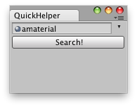

Help.HasHelpForObject 是否有物体帮助
static function HasHelpForObject (obj : Object) : bool
Description描述
Is there a help page for this object?
对于这个对象是否有一个帮助页面？

Editor Window that lets you load docs for any Selected GameObject.
// EditorScript that quickly searchs for a help page
// of the selected Object.
//编辑器脚本快速搜索选择物体的帮助页面
// If there is no page found on the Manual it opens the Unity forum.
//如果手册中没有发现页面，将打开Unity论坛
import UnityEditor;
class QuickHelper extends EditorWindow {
var source : Object;
@MenuItem("Example/QuickHelper _h")
static function Init() {
var window : QuickHelper = EditorWindow.GetWindowWithRect(QuickHelper, Rect(0,0,165,100));
window.Show();
}
function OnGUI() {
EditorGUILayout.BeginHorizontal();
source = EditorGUILayout.ObjectField(source, Object);
EditorGUILayout.EndHorizontal();
if(GUILayout.Button("Search!")) {
if(source == null) {
this.ShowNotification(GUIContent("No object selected for searching"));
} else {
if(Help.HasHelpForObject(source))
Help.ShowHelpForObject(source);
else
Help.BrowseURL("http://forum.unity3d.com/search.php");
}
}
}
}最后修改：2011年6月15日 Wednesday 11:17